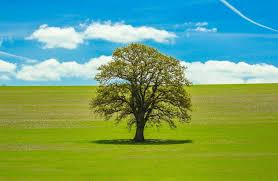

A Nature web page made by me.
Nature is made of everything we see around us – trees, flowers, plants, animals, sky, mountains, forests and more. Human beings depend on nature to stay alive. Nature helps us breathe, gives us food, water, shelter, medicines, and clothes. We find many colors in nature which make the Earth beautiful.Several other products are obtained indirectly from nature which includes timber, paper, medicinal herbs, fibers, cotton, silk and various kinds of food.
